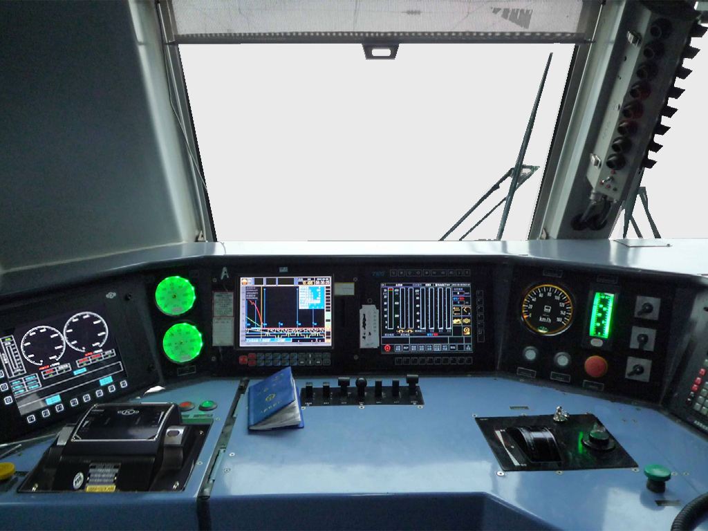

HXD1C · 独立课堂考核
坡道驾驶与调速考评
姓名
学号
正在初始化考核环境
5%
5%
资源加载中

呼唤确认
撒砂
考评进度
0/7
运行数据
⛶
线路纵断面
黏着正常
目标
—
趋势
—
冲动
低
冲动棒
坡道驾驶
准备开始
仅考评模式
×
CIR 机车综合无线通信设备
列尾装置连接与风压查询
×
正在载入CIR原功能模拟器…
坡道驾驶与调速考评
长大上坡道驾驶与调速
长大下坡道调速与制动
考评任务
返回选择
开始考评
考评结束
考评结果
姓名
—
学号
—
开始时间
—
结束时间
—
0
分
—
重新考评
选择其他项目
更换学员
请横屏操作
横屏后可同时观察线路、LKJ和三类手柄。
进入考评